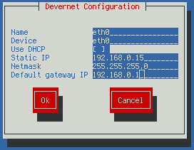

Máte-li ve správě server (desktop) založený na distribuci Red Hat (Centos, Fedora, jánevímco), může Vám přijít vhod tip, jak jednoduše nastavit rozsah pro větší počet IP adres. Pracujeme v příkazové řádce.

Běžně se
používá utilita system-config-network-tui (viz obrázek výše), kde si vše můžete pěkně a
přehledně zapsat do předpřipravených políček. Znalejší prostředí mohou
upravovat přímo konfiguraci, která je k nalezení v
/etc/sysconfig/network-scripts a je přehledně pojmenovaná
ifcfg-eth0:X, kde X je alias pro zařízení eth0. Tato konfigurace pro
alias 0 (/etc/sysconfig/network-scripts/ifcfg-eth0:0) může vypadat
např. takto:
DEVICE=eth0:0
BOOTPROTO=none
BROADCAST=192.168.0.255
HWADDR=01:23:45:67:89:ab
IPADDR=192.168.0.15
NETMASK=255.255.255.0
NETWORK=192.168.0.0
ONBOOT=yes
GATEWAY=192.168.0.1
TYPE=Ethernet
Problém: chci přidat celou /24 síť (254 IP adres).
Máte-li dostatek času (nebo chce-li se vám psát nějaký skript), můžete si pro každou adresu vypsat konfiguraci. Hned ze začátku mě ale napadají tři problémy:
- čas
- složité hledání jedné chybky/překlepu
- nepřehlednost konfigurace
Z tohoto důvodu existuje možnost zapsat jednoduše celý rozsah a to
do konfigurace pojmenované ifcfg-eth0-rangeX, kde X je číslování
jednotlivých rozsahů od 0. Z našich 254 nepřehledných konfigurací tak
vznikne jedna, která mlže vypadat třeba takto (zapsáno v
/etc/sysconfig/network-scripts/ifcfg-eth0-range0):
IPADDR_START=192.168.0.2
IPADDR_END=192.168.0.254
CLONENUM_START=0
Vysvětlení jednotlivých proměnných je vcelku jednoduché: IPADDR_START
je IP, kterou náš rozsah začíná a IPADDR_END je ta, kterou končí
(včetně). CLONENUM_START nám pak udává od kolika má začít číslování
aliasů. V případně, že si systém správně nepřepočte netmasku, lze použít
i proměnnou NETMASK.
A nezapomeňte restartovat službu sítě:
$ service network restart